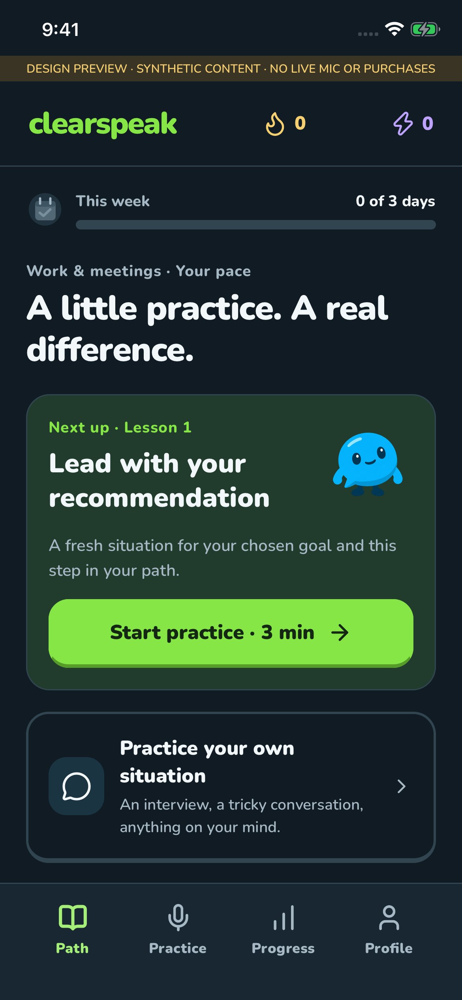
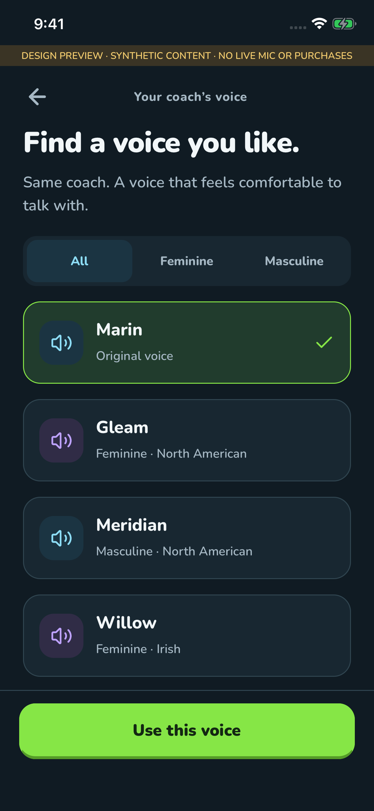

1
Give it a go
Answer a real-world prompt, like sharing an update or making a request. Fictional details are welcome.
Real situations. One useful speaking habit.
A meeting update. An interview answer. Something you need to say. Practice with Pip in a natural conversation, get one useful cue, and find the words that feel like yours.
For iPhone · In development · Not yet on the App Store

One task. One cue. Your own words.
You already speak English. ClearSpeak gives you a place to practice making your message easier to follow.
Answer a real-world prompt, like sharing an update or making a request. Fictional details are welcome.
Pip focuses on the skill you chose. Feedback uses your words when there is enough information to assess them.
Put the cue into your own words. Hands-free conversation keeps things moving without an answer button. Prefer more control? Choose tap-to-finish.
When time allows, try the skill in a fresh situation. Leave with one practical cue to use outside the app.
Your direction. One next step.
Tell us where you want help, what is coming up, and how much structure you want. Your goal and practice needs shape the next lesson. Follow a guided path, bring your own situation, or mix both.
A look inside
Current iPhone development previews with example content. These screens show the design, not a live conversation.


A practice rhythm that fits your week.
The planned launch offer begins with one free introduction after onboarding. See useful feedback before deciding whether to join.
The introduction requires no purchase and does not start a subscription. ClearSpeak is still in development; purchases become available in the app when store setup and testing are complete.
ClearSpeak is for adults who can already hold conversations in English and want to express their ideas more clearly. It is not a complete beginner language course.
No. The launch experience focuses on your message and the day's communication skill. It does not give accent, intelligence, personality, or confidence scores.
No. A second try is a chance to practice. Feedback distinguishes a supported change, a skill you kept using, and something the attempt did not yet show. XP and weekly goals recognize practice; they do not measure speaking ability.
The active conversation includes both speakers and ordinary thinking pauses. Connection setup and feedback preparation happen outside that window. You can end early.
Yes. Choose among eight AI voices in your coaching preferences before starting a conversation. Natural conversation is hands-free; tap-to-finish is available if you prefer to control when each answer ends. Guided, mixed and free practice let you choose how much structure you want.
Yes, when you explicitly consent and start a live lesson, your microphone audio is sent to OpenAI for real-time processing. Your account, learning preferences, transcripts and feedback also use online services. Read the privacy policy for details.
The iPhone app is in development and has not been publicly released. This site provides product information, support and disclosures for the upcoming version. We will update availability when a release is confirmed.